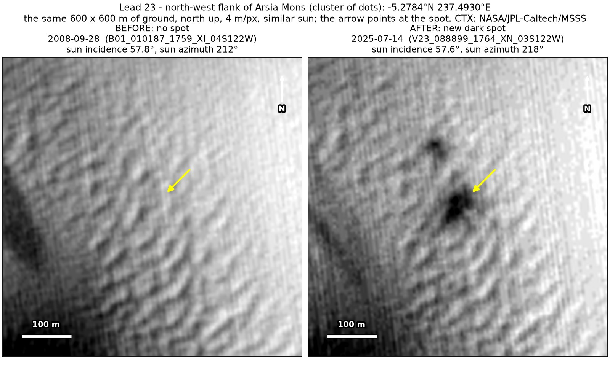
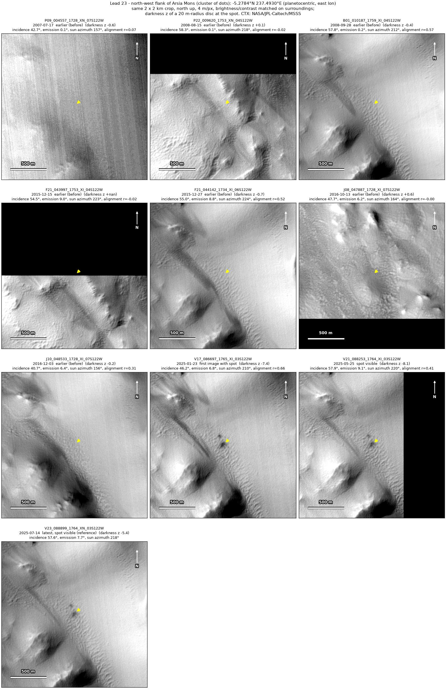
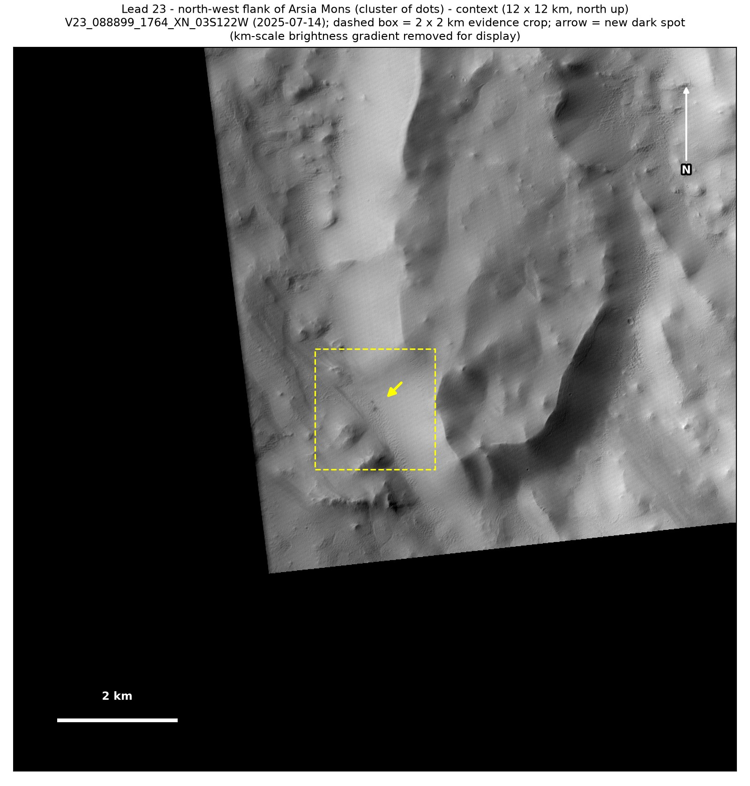
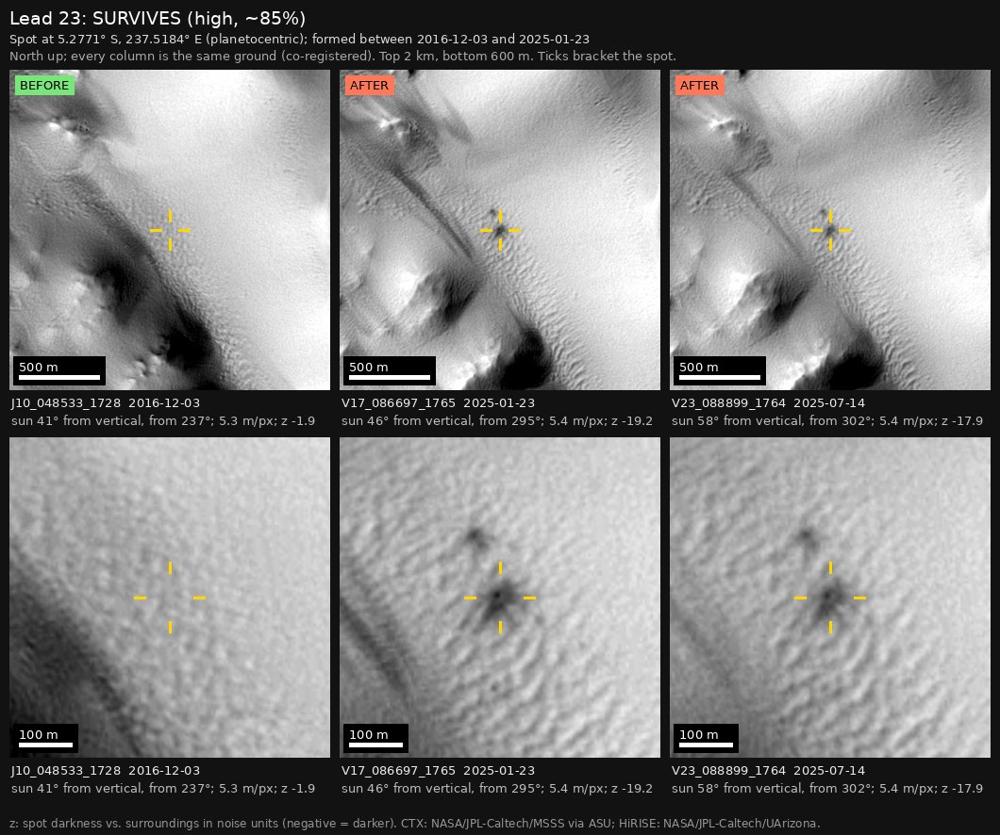

Professor of Mathematics
Paata Ivanisvili
Department of Mathematics, University of California, Irvine

← Possible new impact sites on Mars
Candidate 23: North-west flank of Arsia Mons
Strong · roughly 85%

What changed. Three or four compact dark dots, each 15 to 30 m across and spread over 150 m, appeared on bright plains on the north-west flank of Arsia Mons between December 2016 and January 2025. Three CTX images from three orbits, up to July 2025, show them in the same pattern.
Why it may be a new impact. Seven earlier images, from 2007 to 2016, show no dots there; the three that line up best, from September 2008, December 2015 and December 2016, were taken with the sun at heights that bracket those of the later images. A tight cluster of separate, compact dark dots that keeps its pattern is how a cluster of small new impact craters looks, and no other credible explanation is apparent.
- Location
- 5.278° S, 237.493° E (122.507° W)
- Absent
- 17 July 2007, 15 August 2008, 28 September 2008, 15 December 2015, 27 December 2015, 13 October 2016 and 3 December 2016
- Present
- 23 January 2025, 25 May 2025 and 14 July 2025
- Size
- Three or four dark dots, each 15 to 30 m across, spread over 150 m
- Confidence
- Strong candidate: roughly 85% likely to be a new impact.
- Caveat
- With no comparable dark mark nearby, the evidence that the earlier images would have shown the dots is weak, and they are seen only in images from January to July 2025. No image from the high-resolution HiRISE camera covers it; the nearest ends 31.9 km away. Like every candidate here, it is unconfirmed: see the caveat.


